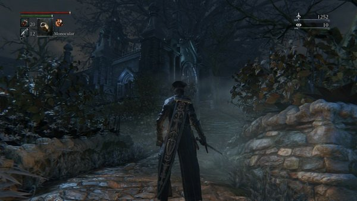
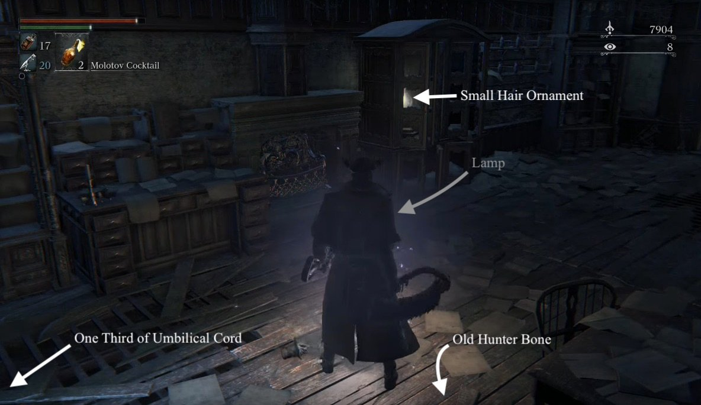

Abandoned Old Workshop is a location in Bloodborne. It is a small workshop hidden away from prying eyes, and looks very similar to the Hunter's Dream location. What significance this has is open to interpretation, though it seems to have some ties with Gehrman.
General Information

- Previous: Old Yharnham, Cathedral Ward
- Next: Abandoned Old Workshop
- Suggested Level: N/A
- Suggested Upgrade: N/A
- Bosses: N/A
- Lamps: 1
- Insight Gained: 1 (NG)
Abandoned Old Workshop Map
NPCs in the area
Bosses
- None
Items
Specials
Lore Notes
- The Abandoned Old Workshop was the origin of the Hunter's Dream. Gehrman, as the First Hunter, formed the Workshop and created various standard Trick Weapons and Firearms for the Hunters that followed.
- The Plain Doll also came from this place and served as Gehrman's one and only companion in his dream.
Abandoned Old Workshop Walkthrough
Getting There
After defeating the Blood-Starved Beast, go to Cathedral Ward and enter the door on the right (from the lamp). Take the elevator up, cross the room with the Gatling gun Wheelchair Huntsman, cross the bridge, but don't enter the next building; instead go around the building's right side, drop down and enter the doorway further ahead. You will be in a dark and descending tower with wooden scaffolds.
Once inside, you'll want to jump to the small platform immediately before the walkway, to your left and down a ways. Use the walkway to build momentum. Drop again to the next platform below and enter the door to reach the Abandoned Old Workshop.
Visibility tip: use Shining Coins--dropping them on the lower scaffolds illuminate the area they land on.
In the Ol' Workshop
This area is exactly like the Hunter's Dream. Where the bath messengers are (in the dream) you will find a chest containing the Doll Set, inside the building you will find the One Third of Umbilical Cord on the Memory Altar and the Small Hair Ornament in a closet. There is also a doll abandoned on the floor that looks like the one in the Dream.

Light the lamp in the middle of the building and exit the building next to where the Memory Altar is in the Dream. Once outside, immediately turn to your left and pick up the Old Hunter Bone next to where the The Hunter's Nightmare Headstone would be.
Abandoned Old Workshop Maps
 Anonymous
AnonymousWhy is tge Next area icon at the top of this page this page?
- Anonymous
I also think Gherman destroyed the way to the hunters workshop. Why would all of the wood be so destroyed? It cant be due to old age. That would mean that this night of the hunt would be extremely long. Years perhaps. I believe gherman destroyed it to hide away the source of the dream. It also holds one third of the umbilical cord. An item needed to end the dream. Right? So it sounds like old gherman isn't done dreaming. He wants to stay alive. In order to do that he kills every single hunter that gets close to ending the dream
- Anonymous
So the noise we hear is actually from a door. The door is located on route towards unseen village. Where you fight two hunters. One has the tonitrus. One of the doors in that area has a lady that makes the same sounds. The reason why you can hear it is because those two areas are extremely close. And you can see the tree and the old workshop from that area
- Anonymous
So, whats with all the dead player ghosts in front of the old doll?
- Anonymous
Near a stump in the outside the workshop. (Near the entrence) Sounds like a woman whimpering. @14 insight so I don't think it's based on that.
- Anonymous
I don't know why someone added that the Old Hunter Bone was "probably" Laurence, because there's no indication of it. Laurence is never mentioned to be a hunter, nor a student of Gehrman's. What little information we have (such as dialogue, especially deleted dialogue) seems to suggest that they were friends or good acquaintances, but nothing suggests that Laurence had any involvement in directly fighting beasts with him.
- Anonymous
Gehrman confused me about this place. He said ascend Odein Chapel. I thought that meant up from Cathedral Ward. But in his defense, it actually makes sense. He was not in Cathedral Ward himself.
- Anonymous
One thing I noticed about this area after several playthroughs is that the lantern isn't under the yharnam headstone, but under the unseen headstone in the hunters dream. There has to be some significance there, right?
- Anonymous
The Paleblood Moon glows so brightly over the Abandoned Old Workshop, probably because of the Moon Presence's fixation on Gehrman and the Hunters. I wonder if the One Third Umbilical here belonged to the Moon Presence, if the theory that it's gestating/maturing in the Hunter's Dream is correct?
- Anonymous
I've searched high and low for the supposed crystal lizard type enemy that gives echoes, I can't find it. If you have a vid of defeating in and then going to the workshop and not getting the evhoes, id love to see it. Also, sometimes, when I approach the abandoned doll, I hear a low rumbling sound like something from a horror movie. And of course everyone knows about the finger twitching.. And you can see her head turn to face you slightly when you enter through the door next to her. Most npcs in the game share the head turning behavior, so it seems like maybe it was planned for her to be an npc but never was?
- Anonymous
Is there any way to get to the second platform without slipping off
- Anonymous
What if you have to be near the doll with 0 insight? The doll in the dream wakes up when you have 1, so maybe it's the opposite for reality?
A few people have mentioned it, but not many people seem to be discussing this. There is the disembodied voice of a woman laughing and saying "yes" over and over again. It seems to only happen before killing Rom. Some people describe it as being by where the gate should be, but I've used my headphones to kind of work out where it is exactly. I'll link a video when I can, so everyone can hear it. I'm assuming it's probably a bug, but it also might be something else. Very odd either way.
- Anonymous
So Im in NG+ and of course I'm by the doll everyone is talking about, when I get close to it theres this dark creepy vague noise ( I don't know if it indicates a purpose or what) and since i was curious i pulled out the monoculars and inspected everything, I saw one finger that keeps twitching. So it could be an NPC in some sort of way.
A two step guide on how to reach the door. Nothing fancy, just pinpointing the two specific jumps you have to make and the correct angles
Link: https://www.youtube.com/watch?v=_w0iDRnq00U
Does anyone know if the abandoned doll in the old workshop, comes to life like the one in hunter's dream? Perhaps with more insight, i ran in with 38~40 insight and nothing happened, was wondering if anyone ran through with more and saw something different.
- Anonymous
So two things, what is dying that gives you 99 blood echoes? And the red specter... How is he dying?
- Anonymous
Heading up the elevator on the way there before the first wheel chair gunner is a window you can roll out of. its a rune for holding more QS bullets and a messenger item with a urn
- Anonymous
In my game (online, NG+) the abandoned doll is surrounded by the gravestones of dead players' spectres. Viewing the spectres show the players fighting something but there are no enemies here. Wondering if it signifies that the doll is surrounded by death or something? Or it could just be a glitch in my game.
- Anonymous
When you go down the pit to the door, is there anything at the bottom of the pit?
- Anonymous
"While the Old Hunter Bone outside was probably Gehrman's apprentice as well as an associate of Master Willem, Laurence. " "He eventually developed a dislike to the Doll since he wants to get rid of the Nightmare."
- Anonymous
You can also see the abandoned workshop from a different area. Start at the Great Cathedral lantern and head out and turn left, towards where the two hostile hunters are (I believe it's the path to unseen village) and head down the stairs to just before where you would fight the hunters. If you look off the edge there's the giant tree and you can spot the workshop itself.
- Anonymous
Has anyone else noticed that the only tombstone in AOW is the same one the doll periodically visits in Hunters Dream? Could this be Gherman's grave in the real world?
Has any one else noticed that there is a strange voice in the area. I dont think it is the doll although it was my first idea. Outside of the work shop near where all the tutu rail messages are in the dream. There the voice of what sounds like a women. She seem to be sighing, giggleing, and saying "yes" very quietly I had to crank my tv up to here her. I cant figure out a way to interact with it. From what I can find not many people know about this.
- Anonymous
- Anonymous
The doll in the old workshop is moving his finger like the always willing to help doll when she is sleeping, maybe the doll is filled with the original wielder of the umbillical cord, probably the offspring of oedon, since he doesn't have form needs of a physical host (which would please the ones who think she is an Old God). ¿What do you think?
- Anonymous
If you look at the hand on the abandoned dolls lap, youll see one of its fingers move occasionally
- Anonymous
I was looking at the Doll with the monocular in order to see its finger moving, and after seeing this a few times, I gained 99 insight (I think). I started at 95, then the sound and particle effect activated, while the counter in the corner said +99. No one else has brought this up so it might be a glitch. Can someone else confirm?
- Anonymous
Apparently the "Oho~! Yes..." words you can hear around that one tree in AOW are just voices coming from some house above or below the area, I vaguely remember hearing that sentence being repeated somewhere else, and when I went there after Blood Moon happened (and when people in their houses stop responding and go quiet) I couldn't hear anything anymore. But since it doesn't seem like there's anything above the workshop, and it's hard to think of anything being below of it either, I suppose one could assume the area overlaps with some other area, but we can still hear the sounds of that other area due to a glitch or something.
- Anonymous
Does anyone know why there are specters in the old abandoned workshop that are being killed all using chikage to attack the abandoned doll? also there are notes warning of metamorphases.
- Anonymous
- Anonymous
SO, um...yeah, I think this'll be impossible to have a serious discussion about, but go to the stump in the clearing before the workshop, bump the volume, and listen through eldritch means to two people getting their freak on to blood droplets, with the female repeating, "Thank you, (my son/love)." Can't really discern the last bit, leaning toward the first translation just off how it sounds. Which is a really, really freaky Feudian dropkick. Can anyone else confirm this for me. I'm just a guy with a threaded cane. I didn't ask for all this mindflaying and magic.

{kind=link}
The Doll's finger(s) twitch very rarely.
29
+10
-1